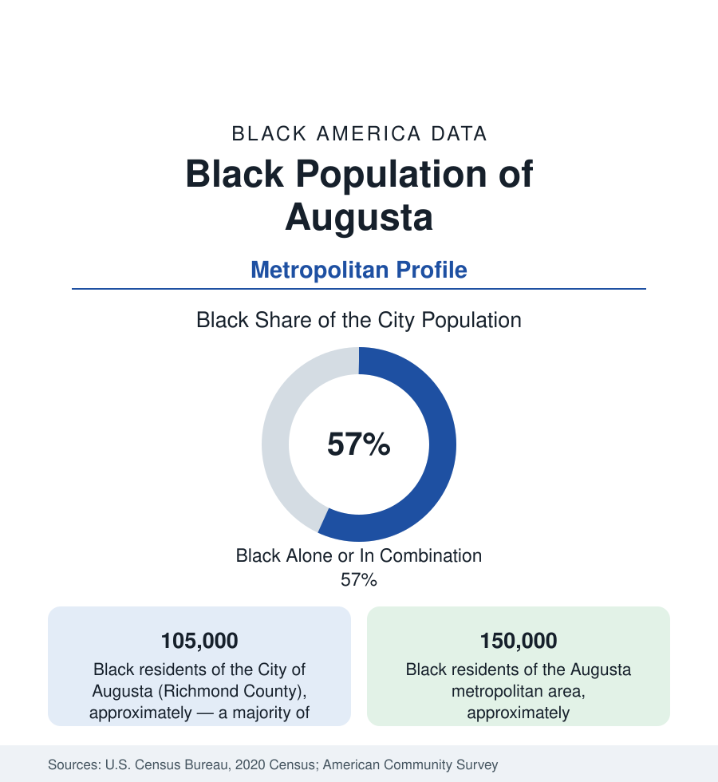

Black Cities
Black Augusta: The Garden City, the Godfather, and the Medical District
Augusta holds about 105,000 Black residents in the city and 150,000 across the metro — a majority-Black Georgia city with James Brown in its marrow. The census profile.

Augusta holds about 105,000 Black residents within the consolidated city-county — Black alone or in combination, a clear majority of its 200,000 people — and about 150,000 across the metropolitan area. This is James Brown's hometown, and the data carry his imprint alongside an older distinction: Augusta was one of the urban South's Black professional capitals, home to Georgia's oldest Black church congregation and a medical-education lineage — the Laney-Walker district — that the modern medical district still extends.
Laney-Walker, Bethlehem, and the Hill
The community's geography is the city's southern and eastern body: the Laney-Walker district — named for Lucy Craft Laney (the educator who founded the Haines Institute in 1883, in Augusta, educating generations of Black teachers) and Dr. Charles Walker — the historic professional-commercial heart along what is now Laney-Walker Boulevard, its Golden Blocks of Black business memory; Bethlehem and the Turpin Hill and East Augusta districts of the factory and railroad working class; the Hill above (Summerville — the white elite's historic ground, its data the contrast file); and the southside growth along Deans Bridge and Windsor Spring roads — the modern Black suburban Augusta of subdivisions and megachurches in Richmond County's southward sprawl. Springfield Baptist Church — organized in 1787, recognized as among the oldest independent Black Baptist congregations in America, its sanctuary still standing in the district — anchors the institutional map alongside Paine College (founded 1882 by the Methodist church to educate the freedpeople, still enrolling on 15th Street) and the Medical College of Georgia's campus at the district's edge.
The Medical District and the River's Economy
Augusta's Black employment runs through the sector its data are famous for: medicine. The Medical College of Georgia and the AU Health system anchor the state's second medical hub (with the VA and the children's hospital), employing Black Augustans across the full pyramid — and the lineage is literal: the old University Hospital and the Black medical tradition of the district (the Stoney and Pilcher generations of Black Augusta physicians) precede it. Fort Eisenhower (the installation long known as Fort Gordon, the Army's Cyber Command home) at the county's west adds the garrison tier — its Black soldiers and civilian cyber workforce a growing professional file — and the Savannah River Site across the river in South Carolina (the nuclear reservation's workforce) and the river's industrial corridor complete the structure. The indicators record a working city's spread: median Black incomes in the Southern mid-range, homeownership rooted in the southside subdivisions, poverty concentrated in the old east-side tracts — and the Masters economy's annual week (the tournament's service workforce and the caddie tradition's Black history at Augusta National, its own documented chapter) as the city's recurring national dateline.
The Godfather's Ledger
James Brown is not decoration on this data — he is an economic and institutional fact: raised in Augusta's Twiggs Street poverty, he made the city his base for life (the arena bears his name, the boulevard his statue, the James Brown Family Foundation's turkey and toy giveaways a standing line in the community's calendar), and his story — the shoeshine stand outside the radio station, the Famous Flames' formation in the region — is the city's Black twentieth century in one biography. The cultural economy around the legacy (the Augusta Museum's Brown exhibition, the soul and gospel scene, Imperial Theatre's restored stage) is the heritage file's Augusta chapter. The political data match the demography: a majority-Black consolidated government, Black mayors in the modern record, and the Augusta-Richmond commission's politics as the county's central civic text.
Change and the Estimates
The estimates show the metro growing on the cyber mission — Fort Eisenhower's Cyber Command expansion drawing the tech workforce to the county's west and Columbia County's suburbs — its Black population growing more slowly in share as the suburban counties outpace the core, the medical district's expansions (the campus's growth along Laney-Walker's edge, with the community's land questions attached) and the riverfront's development as the current files. The school data (Richmond County's majority-Black district) and the HBCU's (Paine's small, persistent enrollment) carry the education ledger of a city whose Black majority is its oldest fact.
Reading the Augusta Numbers
Augusta is the majority-Black professional-city profile of the old South: a Black church older than the republic's first decade, an educator who built a school in 1883, the Godfather of Soul on the boulevard, and a medical district where the community's grandchildren now hold the clipboards. Its 150,000 metro residents are not a minority story. They are the city itself, in the data as in fact.
More in Black Cities
Black Atlanta: Population, Distribution, and Growth of a Black Metropolis
Metro Atlanta holds more than two million Black residents — roughly one in three, second only to New York. The suburban distribution, migration history, and composition of Black Atlanta in the census data.
Black New York: The Largest Black Population in America
The New York metropolitan area holds about 3.4 million Black residents — more than any metro in the nation — and the city itself about two million. The census profile.
Black Washington: The District and the Metro
The Washington metro holds about 1.6 million Black residents, and the District itself — long a majority-Black city — now records a Black share near 41 percent. The census profile.
Source: U.S. Census Bureau, 2020 Census; American Community Survey; Population Estimates Program.